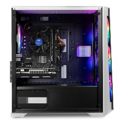
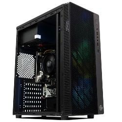
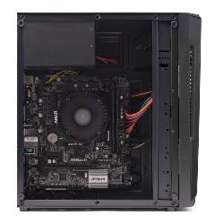

-
Computador gamer
Processador 1 x Processador Intel Core i5-10400F, 6-Core, 12-Threads, 2.9Ghz (4.3Ghz Turbo), Cache 12MB, LGA1200, BX8070110400F Placa mãe 1 x Placa Mae Biostar H510MHP, DDR4, Socket LGA1200, M-ATX, Chipset Intel H510, H510MHP Memória 1 x Memoria Mancer Dantalion, 8GB (1x8GB), DDR4, 3200MHz, CL22, Preta e Roxa, MCR-DTLPRP3200-8GB Armazenamento 1 x SSD TGT Egon T2, 240GB, Sata III 6GB/s, Leitura 530 MB/s, Gravacao 490 MB/s, TGT-EGNT2-240 Placa de vídeo 1 x Placa de Video Galax GeForce GTX 1650 EX 4GB GDDR6 1-Click OC 128-bit, 65SQL8DS66E6 Fonte 1 x Fonte Mancer Thunder 500W, 80 Plus Bronze, MCR-THR500-BL01-OEM Gabinete 1 x Gabinete Gamer Mancer Ward, Rainbow, Mid-Tower, Lateral de Vidro, Com 4 Fans, Branco, MCR-WRD-RWH01 Cabo HDMI 1 x Cabo HDMI Pichau 1.8m, 5001-1A Cabo De Força 1 x Cabo de Força TGT 1.8m 3 Pinos, TGT-PWC-B01
R$3.149,97
-
Computador gamer
Processador 1 x Processador AMD Ryzen 5 4600G, 6-Core, 12-Threads, 3.7GHz (4.2GHz Turbo), Cache 11MB, AM4, 100-100000147BOX Placa Mãe 1 x Placa Mae Biostar A320MH DDR4 Socket AM4 Chipset AMD A320 Memória 1 x Memoria Mancer Dantalion, 8GB (1x8GB), DDR4, 3200MHz, CL22, Preta e Roxa, MCR-DTLPRP3200-8GB Armazenamento 1 x SSD TGT Egon T2, 240GB, Sata III 6GB/s, Leitura 530 MB/s, Gravacao 490 MB/s, TGT-EGNT2-240 Fonte 1 x Fonte Mancer Thunder 400W, 80 Plus Bronze, MCR-THR400-BL01-OEM Gabinete 1 x Gabinete Gamer TGT F-22 Lateral De Acrilico Preto, TGT-F22-RGB01 Cabo HDMI 1 x Cabo HDMI Pichau 1.8m, 5001-1A Cabo de Força 1 x Cabo de Força TGT 1.8m 3 Pinos, TGT-PWC-B01
R$ 1863,00
-
Computador Gamer
Processador 1 x Processador AMD Ryzen 5 4600G, 6-Core, 12-Threads, 3.7GHz (4.2GHz Turbo), Cache 11MB, AM4, 100-100000147BOX Placa mãe 1 x Placa Mae Biostar A320MH DDR4 Socket AM4 Chipset AMD A320 Memória 1 x Memoria Mancer Dantalion, 8GB (1x8GB), DDR4, 3200MHz, CL22, Preta e Roxa, MCR-DTLPRP3200-8GB Armazenamento 1 x SSD Team Group GX2, 128GB, 2.5", Sata 6GB/s, T253X2128G0C101 Fonte 1 x Fonte Mancer Thunder 400W, 80 Plus Bronze, MCR-THR400-BL01-OEM Gabinete 1 x Gabinete Gamer Mancer Ares Lateral Acrilico Preto, MCR-AR01-FL Cabo HDMI 1 x Cabo HDMI Pichau 1.8m, 5001-1A Cabo de Força 1 x Cabo de Força TGT 1.8m 3 Pinos, TGT-PWC-B01
R$1.576,99